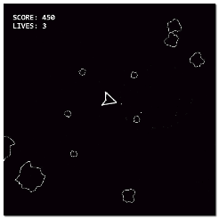

This tutorial will take you through the process of creating a small game using GameMaker Studio 2, with the aim to get you familiarised with the interface and the work flow. The game we've chosen for this tutorial is a typical asteroid shooter game, which we'll call Space Rocks. Almost all novice programmers make this game at some point, as it's a fun game to play, but fairly simple to make and shows all the most basic components of a game - things you'll find in the most basic arcade game up to the most advanced RPG - like movement, logic and gameplay design.

We know that getting started with any new skill or tool can be tough at first, which is why this tutorial will attempt to make the introduction to game making as smooth and fun as possible. The tutorial itself is split into 4 parts which are listed below and also available from the drop down menu at the top of the tutorials tab:
Each chapter is also accompanied by a short video that takes you through each of the steps outlined in text, and you can close GameMaker Studio 2 at any time in the progress of this tutorial (saving your project first!) and when you next load the project you will be taken to the place where you left off. If you wish to play around with what you have learned so far, we recommend that you save the project in its current state - so that you can continue from the same point later - then save it again with a different name and edit the renamed project so as not to lose or change anything that is important to future chapters.
Note that the video overlay window can be closed and opened separately, so if you close it by mistake you can either click one of the links given at the start of each chapter (and listed below too), or you can go to the Window menu in the IDE and select Tutorial Windows. Also note that you can access the chapter list from the Playlist icon in the top left-hand corner of the player and select the required video from there too.
For those of you that have not used the GameMaker Studio 2 IDE before, we have prepared a short introductory video here, and you can also check out the Quick Start Guide in the manual.
With that said, let's hurry along and get started, so click the "Next" button below to start on the path to making your first game!